|
Thanh-Dat Truong
Thanh-Dat Truong is currently a PhD candidate at the University of Arkansas (UoA), where he is supervised by Dr. Khoa Luu. He received his B.Sc. degree in Computer Science from the Honors Program, University of Science, VNU in 2019 under the supervisions of Dr. Khoa Luu and Dr. Minh-Triet Tran. He was a research intern with Dr. Minh Do at Coordinated Science Laboratory at the University of Illinois at Urbana-Champaign in 2018. |
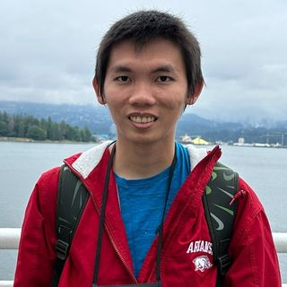 |
{kind=link}
Recent NewsOct. 2023: Thanh-Dat Truong was awarded NeurIPS 2023 Scholar Award for presenting his paper at NeurIPS'23. Congratulations! Sep. 2023: One paper has been accepted to Thirty-seventh Conference on Neural Information Processing Systems, 2023. Congratulations! Sep. 2023: Thanh-Dat Truong was awarded the Reginald R. "Barney" & Jameson A. Baxter Endowed Graduate Fellowship for the academic year 2023-2024. Apr. 2023: Thanh-Dat Truong has been awarded a Doctoral Student Presentation Travel Grant to present research at CVPR 2023. Mar. 2023: One paper has been accepted to Neurocomputing (IF: 5.779). Congratulations! Feb. 2023: One paper has been accepted to IEEE/CVF Conference on Computer Vision and Pattern Recognition, 2023. Congratulations! |
ResearchThanh-Dat Truong research aims to develop robust and fair vision learning approach. He is interested in computer vision, unsupervised domain adaptation, continual learning, and action recognition. |

|
FALCON: Fairness Learning via Contrastive Attention Approach to Continual Semantic Scene Understanding in Open World
Thanh-Dat Truong, Utsav Prabhu, Bhiksha Raj, Jackson Cothren, and Khoa Luu arXiv, 2023 |
| 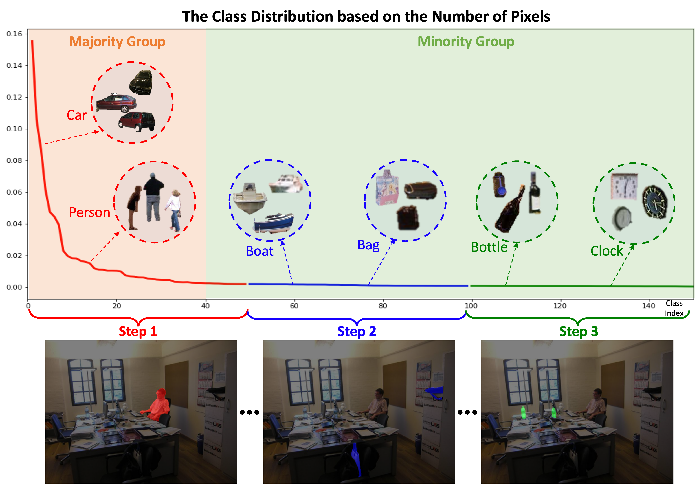 |
Fairness Continual Learning Approach to Semantic Scene Understanding in Open-World Environments
Thanh-Dat Truong, Hoang-Quan Nguyen, Bhiksha Raj, and Khoa Luu Thirty-seventh Conference on Neural Information Processing Systems (NeurIPS), 2023 |
| 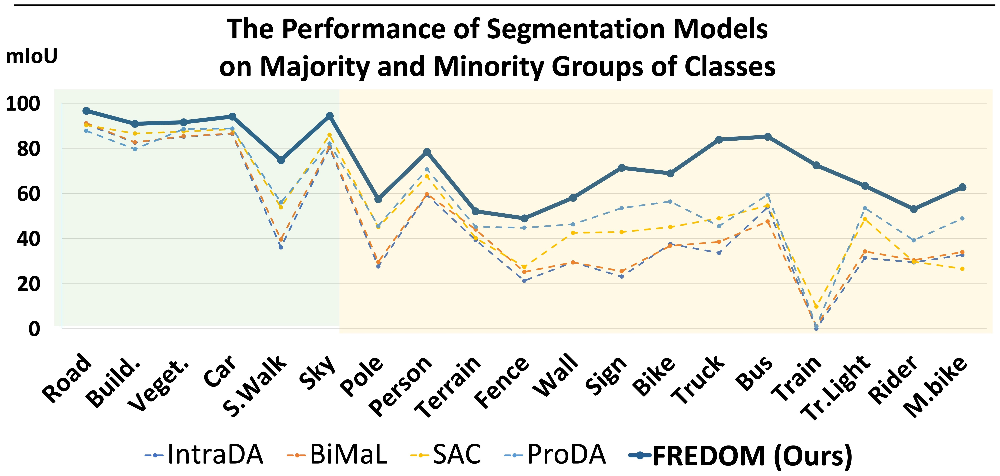 |
FREDOM: Fairness Domain Adaptation Approach to Semantic Scene Understanding
Thanh-Dat Truong, Ngan Le, Bhiksha Raj, Jackson Cothren, and Khoa Luu The IEEE/CVF Conference on Computer Vision and Pattern Recognition (CVPR), 2023 |
| 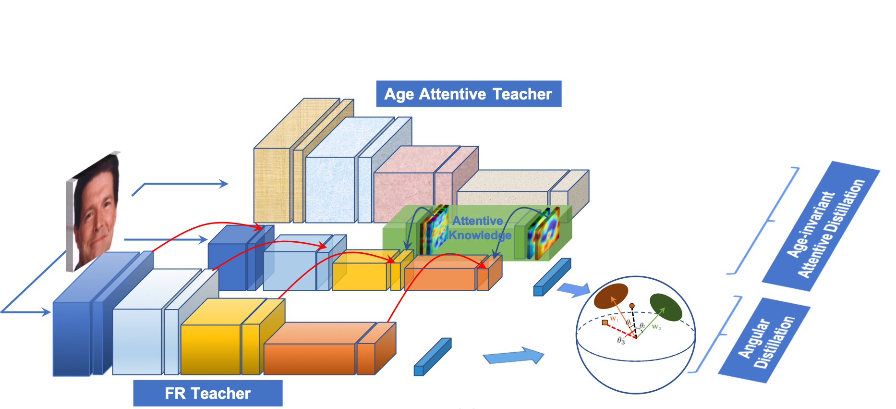 |
LIAAD: Lightweight Attentive Angular Distillation for Large-scale Age-Invariant Face Recognition
Thanh-Dat Truong, Chi Nhan Duong, Kha Gia Quach, Ngan Le, Tien D. Bui, and Khoa Luu Neurocomputing, 2023 |
| 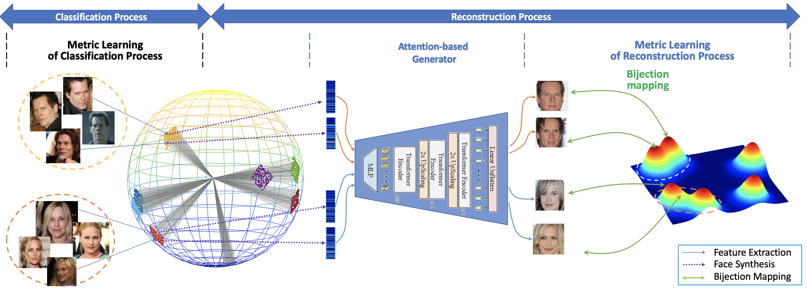 |
Vec2Face-v2: Unveil Human Faces from their Blackbox Features via Attention-based Network in Face Recognition
Thanh-Dat Truong, Chi Nhan Duong, Ngan Le, Marios Savvides, and Khoa Luu arXiv, 2023 |
| 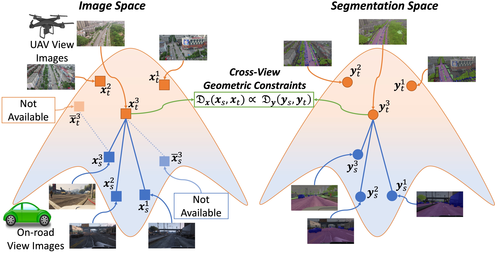 |
CROVIA: Seeing Drone Scenes from Car Perspective via Cross-View Adaptation
Thanh-Dat Truong, Chi Nhan Duong, Ashley Dowling, Son Lam Phung, Jackson Cothren, and Khoa Luu arXiv, 2023 |
| 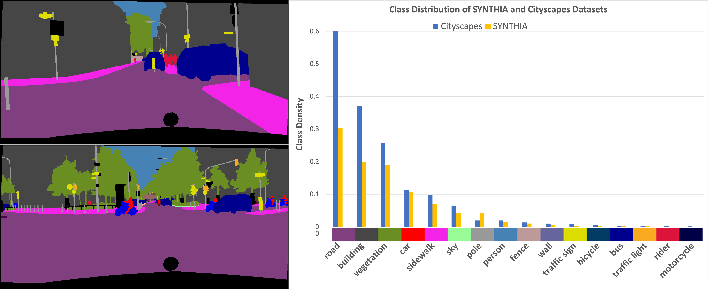 |
CoMaL: Conditional Maximum Likelihood Approach to Self-supervised Domain Adaptation in Long-tail Semantic Segmentation
Thanh-Dat Truong, Chi Nhan Duong, Pierce Helton, Ashley Dowling, Xin Li, and Khoa Luu arXiv, 2023 |

|
Cross-view Action Recognition Understanding From Exocentric to Egocentric Perspective
Thanh-Dat Truong and Khoa Luu arXiv, 2023 |

|
CONDA: Continual Unsupervised Domain Adaptation Learning in Visual Perception for Self-Driving Cars
Thanh-Dat Truong, Pierce Helton, Ahmed Moustafa, Jackson David Cothren, Khoa Luu arXiv, 2022 |
| 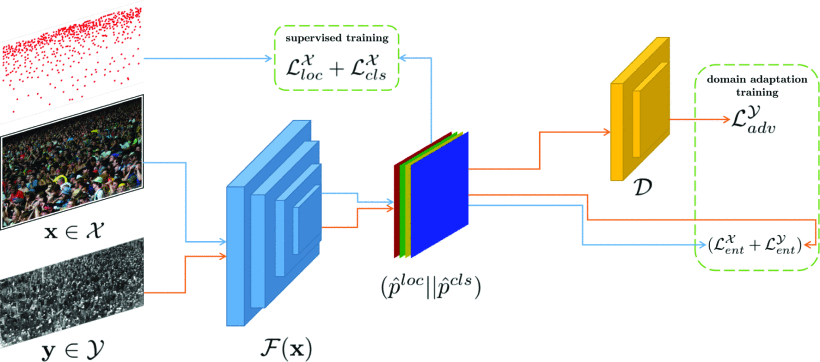 |
Self-Supervised Domain Adaptation in Crowd Counting
Pha Nguyen, Thanh-Dat Truong, Miaoqing Huang, Yi Liang, Ngan Le, and Khoa Luu The IEEE International Conference on Image Processing (ICIP), 2022 |
| 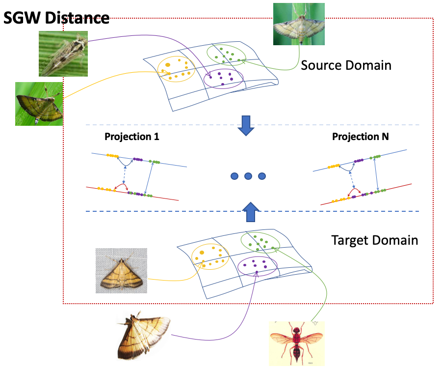 |
OTAdapt: Optimal Transport-based Approach For Unsupervised Domain Adaptation
Thanh-Dat Truong, Raviteja NVS Chappa, Xuan Bac Nguyen, Ngan Le, Ashley Dowling, and Khoa Luu The International Conference on Pattern Recognition (ICPR), 2022 |
| 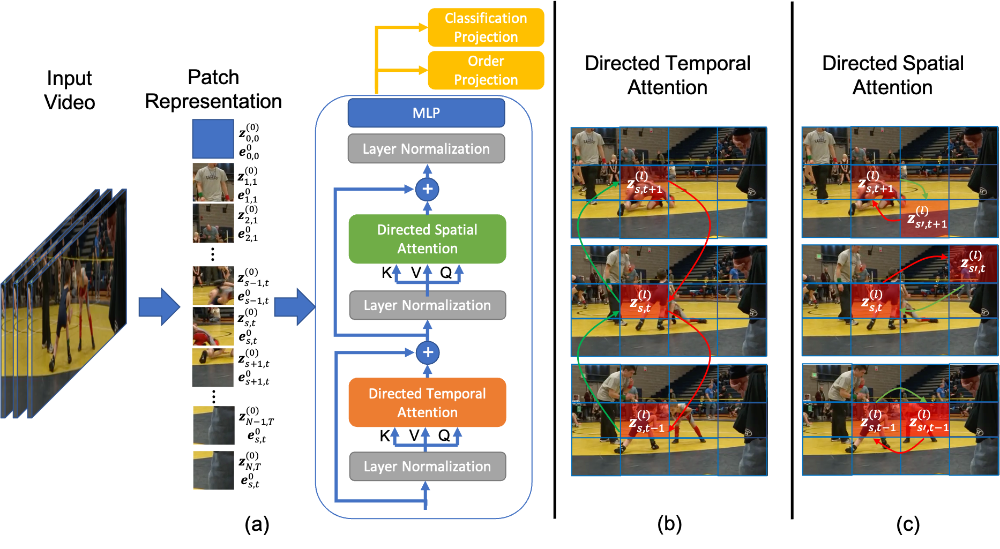 |
DirecFormer: A Directed Attention in Transformer Approach to Robust Action Recognition
Thanh-Dat Truong, Quoc-Huy Bui, Chi Nhan Duong, Han-Seok Seo, Son Lam Phung, Xin Li, and Khoa Luu The IEEE/CVF Conference on Computer Vision and Pattern Recognition (CVPR), 2022 |
| 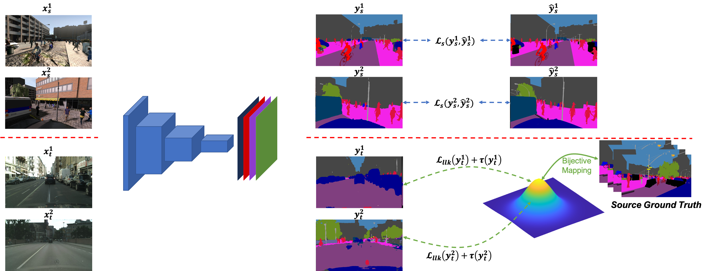 |
BiMaL: Bijective Maximum Likelihood Approach to Domain Adaptation in Semantic Scene Segmentation
Thanh-Dat Truong, Chi Nhan Duong, Ngan Le, Son Lam Phung, Chase Rainwater, and Khoa Luu The IEEE/CVF International Conference on Computer Vision (ICCV), 2021 |
| 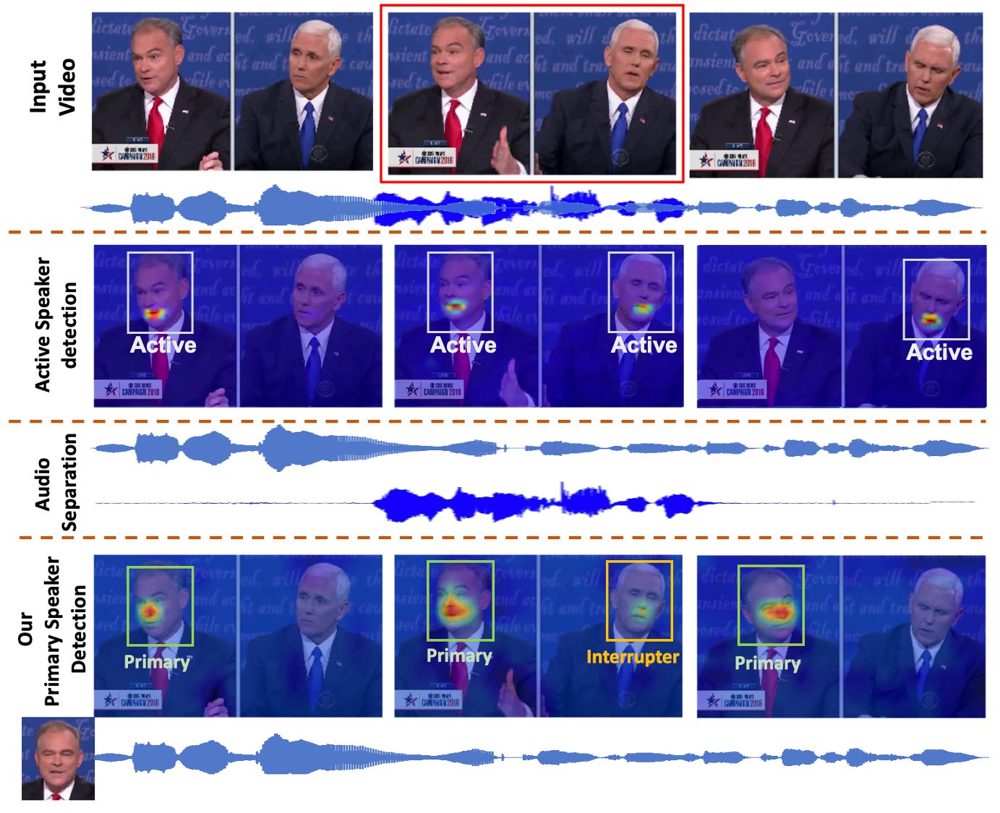 |
The Right to Talk: An Audio-Visual Transformer Approach
Thanh-Dat Truong, Chi Nhan Duong, The De Vu, Hoang Anh Pham, Bhiksha Raj, Ngan Le,and Khoa Luu The IEEE/CVF International Conference on Computer Vision (ICCV), 2021 |
| 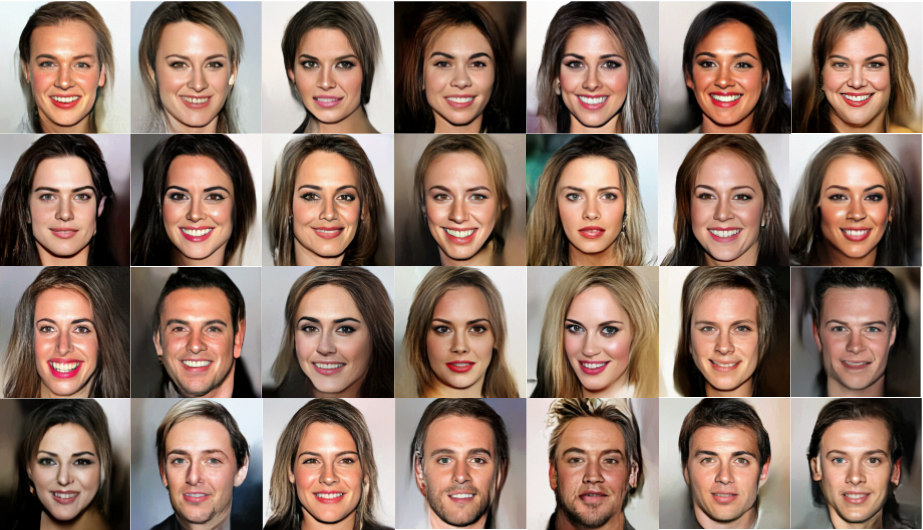 |
Fast Flow Reconstruction via Robust Invertible nxn Convolution
Thanh-Dat Truong, Chi Nhan Duong, Minh-Triet Tran, Ngan Le, and Khoa Luu Future Internet, 2021 |
| 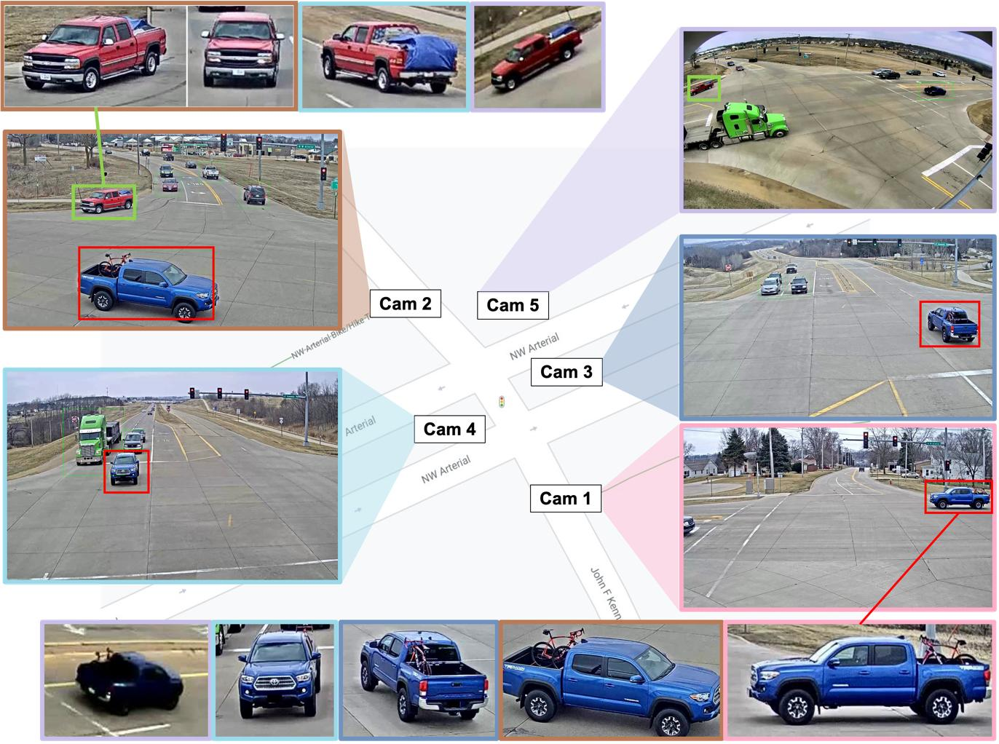 |
DyGLIP: A Dynamic Graph Model with Link Prediction for Accurate Multi-Camera Multiple Object Tracking
Kha Gia Quach, Pha Nguyen, Huu Le, Thanh-Dat Truong, Chi Nhan Duong, Minh-Triet Tran, and Khoa Luu The IEEE/CVF Conference on Computer Vision and Pattern Recognition (CVPR), 2021 |
| 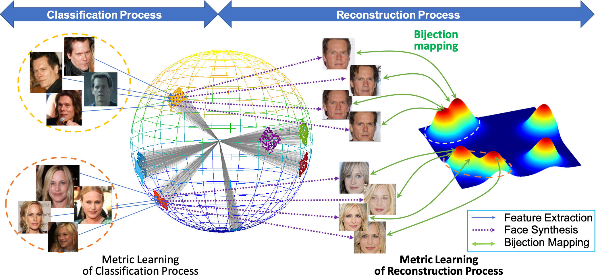 |
Vec2Face: Unveil Human Faces from their Blackbox Features in Face Recognition
Chi Nhan Duong, Thanh-Dat Truong, Kha Gia Quach, Hung Bui, Kaushik Roy, and Khoa Luu The IEEE/CVF Conference on Computer Vision and Pattern Recognition (CVPR), 2020 |
| 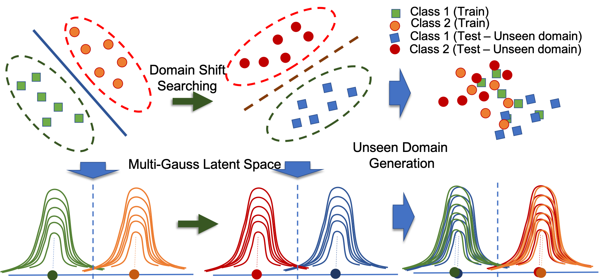 |
Domain Generalization via Universal Non-volume Preserving Approach
Thanh-Dat Truong, Chi Nhan Duong, Khoa Luu, Minh-Triet Tran, and Ngan Le The Conference on Computer and Robot Vision (CRV), 2020 |
Miscellanea |
 |
Program Committee, CVPR Precognition Workshop (since 2020)
Reviewer, CVPR Reviewer, ICCV Reviewer, WACV |
|
Reviewer, ECCV
Reviewer, ACCV Reviewer, ICPR Reviewer, Computers, Environment and Urban Systems |
|
|
|
Reviewer, IEEE TPAMI
Reviewer, IEEE TIP Reviewer, IEEE TAI Reviewer, IEEE TCSVT Reviewer, IEEE Access |
|
Teaching Assistant of NACME Google Applied Machine Learning Intensive Summer Bootcamp, 2021, 2022.
CSCE4613: Artificial Intelligence (Guest Lecturer). CSCE5703: Computer Vision (Guest Lecturer). CSCE4263: Advanced Data Structures (Guest Lecturer). CSCE4133: Algorithms (Guest Lecturer). |
|
The source code of this webpage is adopted from Dr. Jon Barron. |